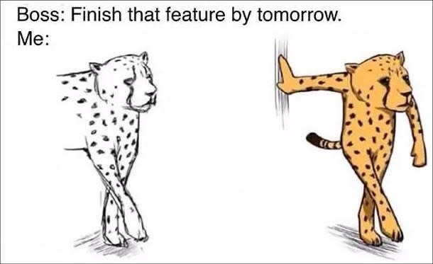

Yep sorry, I went there. The dreaded popup.
But only because I genuinely think you might be interested in my free weekly newsletter on the latest news in tech. 👇 #sorrynotsorry
CARMEN CHUNG
7 November 2020
As a software developer, getting time estimations for building features is often a tricky part of our daily work. One Sunday last month, I finished this digital art work within a day, and here's what helped me...
This is where you allocate a set amount of time to complete a task, and then as soon as that time is up - it's pens down. In my opinion, time boxing rarely ever works in software engineering - often because the people who set the time limit actually want you to finish the work regardless of how many hours it really takes (which means you end up working on it in your own time), or YOU refuse to adhere to the timeframe because you're "just another hour" away from finishing the task (which means you end up working on it in your own time, because no, you aren't another hour away from finishing it 😅).
For this piece, I was following a digital art tutorial that was only free for the weekend - and because of timezones, that basically meant only Sunday for me. I knew that if I didn't finish the piece in time, I'd have to pay for the tutorial, so I timeboxed one day for it - and there was actually incentive for me to adhere to that deadline because, frankly, I don't like paying for what I can get for free.
I'd followed tutorials from this girl before and knew that I would always end up taking about three or four times longer than however long her tutorial was. I would pause the video, adjust a bunch of things, rewind, and replay.
This tutorial was two hours, and I gave myself the entire day to paint the tiger - true to form, it took me around 8-10 hours to complete. I estimated a day because frankly, things always come up in software development that mean initial estimates are often underestimated, so I'm accustomed to adding a buffer.
While it may seem counterintuitive to saving time, breaks are important. At one point while working on this, I was fatigued - my shoulder was stiff, my fingers were cramping, and I was making lots of mistakes that I had to constantly undo. It felt like one step forward, two steps back. This is the time for a break.
I ended up taking two hours off to play Monopoly Deal online with friends, before getting back into it and pushing through the final hour of work. Coming back to it after a small break also meant I could see with fresh eyes which parts of the painting needed some tweaks. This often happens in software development - even taking a walk or a shower (or better yet, go sleep on it) will suddenly reset your brain so you finally figure out the way to debug your problem.
Now if only I could be as good at time estimation in my daily job...😂

Follow me @carmenhchung on Twitter for more coding thoughts & memes. 🙃
← GO BACK